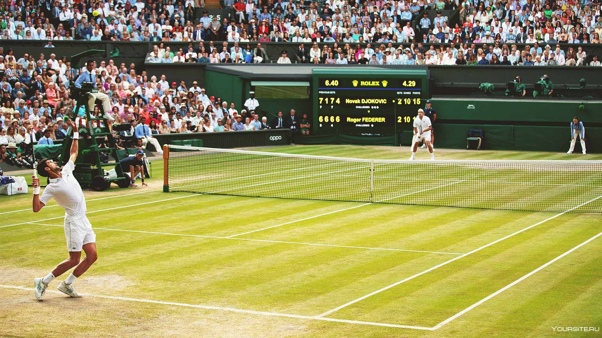

Робсон: разговоры о плохой форме Джоковича возникают регулярно, а потом он выигрывает всё
Бывшая 27-я ракетка мира, британская теннисистка Лора Робсон заявила, что разговоры о плохой форме Новака Джоковича возникают регулярно, но он всегда находил на них ответ. «Мне кажется, что каждые пару лет возникают разговоры, что Джокович не очень хорошо играет. А потом он возвращается и выигрывает все турниры подряд в течение полугода. Думаю, на этот раз всё по-другому, потому что уровень конкуренции определённо вырос. Янник Синнер и Карлос Алькарас играют невероятно, так что, возможно, это навело Новака на некоторые мысли. Выступление в Индиан-Уэллсе могло помочь ему понять, что именно нужно изменить. Не то чтобы Джокович должен идти в ногу со временем, ибо он совершенно точно не отстаёт — просто нужно продолжаться совершенствоваться. Вы можете спросить — а есть ли что-то, что Новаку нужно улучшить, ведь он так хорош, и это вполне справедливый вопрос. В каком-то смысле это делает игру более захватывающей, потому что появилось больше конкуренции. Сейчас есть ощущение, что Джокович не будет побеждать на каждом турнире. Кроме того, стоит отметить, что в начале месяца Джокович прекратил сотрудничество со своим многолетним тренером Гораном Иванишевичем. Они очень хорошо ладили, но, как и во многих других случаях, всё идёт своим чередом. Они так много знали друг о друге, и в последние несколько месяцев у них были некоторые разногласия на корте. Иногда просто нужен свежий взгляд. Я читала в сербской газете, что Иванишевич сказал, что они исчерпали запас слов, которые могли бы сказать друг другу. Похоже, оба поняли, что пора разойтись. И то, что это не было односторонним решением, очень хорошо», — сказала Робсон в эфире Sky Sports Tennis.
Стефанос Циципас на отказе Джере прошёл в 1/16 финала «Мастерса» в Монте-Карло
12-я ракетка мира, 25-летний греческий теннисист Стефанос Циципас вышел в 1/16 финала грунтового «Мастерса» в Монте-Карло (Монако). В первом раунде Циципас одержал победу над 34-й ракеткой мира Ласло Джере. Сербский теннисист отказался от продолжения борьбы при счёте 3:6, 2:3. Продолжительность встречи составила 1 час и 5 минут.
предыдущая следующая